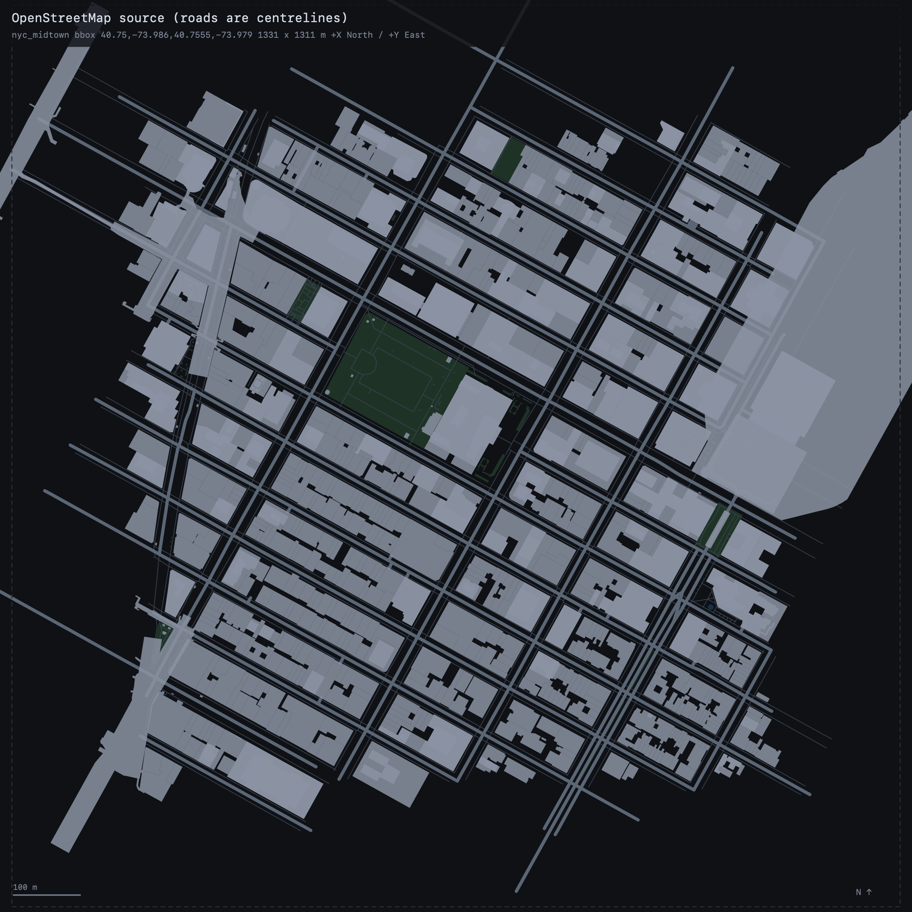
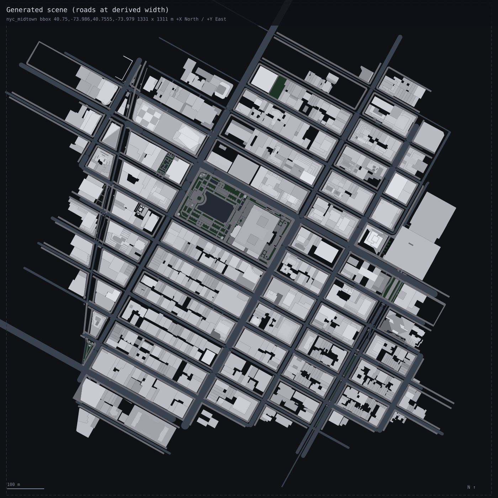
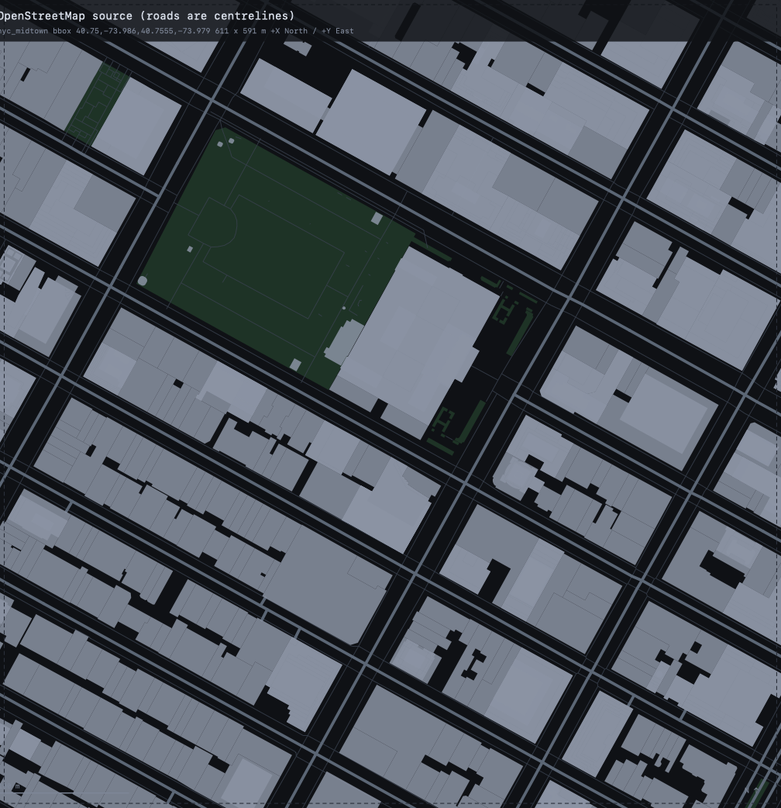
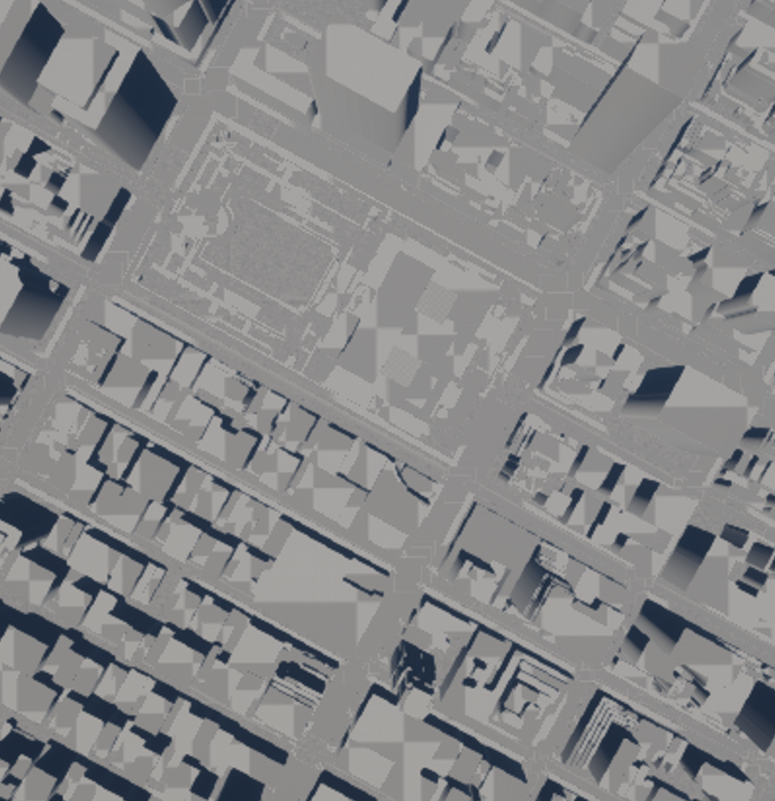

CityGen: reconstructing Midtown Manhattan in Unreal Engine 5.7
An OpenStreetMap to Unreal translation pipeline, authored by an AI coding agent and consumed by the Procedural Content Generation framework.
CityGen reconstructs a bounded area of a real city as three dimensional geometry inside Unreal Engine 5.7, generated at load time by the Procedural Content Generation (PCG) framework. The subject area is Midtown Manhattan, New York City. Every volume, carriageway and ground surface in the resulting scene is derived from an OpenStreetMap extract by an automated translator. The translator itself is written by an AI coding agent, so that it remains transferable to new city
1Area and data source
The subject area is a rectangle of Midtown Manhattan bounded by West and East 36th to 45th Street and by Sixth Avenue to Park Avenue, containing Bryant Park and the New York Public Library in its north west quadrant. At 0.36 square kilometres it sits at the district end of the intended scope of a few city blocks to a small district: large enough that the street grid, the block structure and a genuine skyline range are all present, small enough that every feature can be checked against the source rather than sampled.
| Place | Midtown Manhattan, New York City, USA. W/E 36th to 45th Street, Sixth Avenue to Park Avenue. |
| Bounding box | south 40.7500, west −73.9860, north 40.7555, east −73.9790 (WGS84) |
| Ground extent | 611 m north to south by 591 m east to west; 0.36 km2; approximately 27 Manhattan blocks (9 street intervals by 3 avenue intervals) |
| Source | OpenStreetMap, this area, retrieved through the Overpass API |
| Snapshot | Pinned with [date:"2026-08-15T00:00:00Z"], so a later run returns identical source data |
| Extract | 3,321 elements over 14 selectors, fetched with a 150 m buffer |
| Licence | Data © OpenStreetMap contributors, ODbL 1.0 |
2The pipeline
2.1 Authorship: a coding agent working against skills
The translator is not a fixed program maintained by hand. Tagging conventions differ enormously
between cities, and a rule fitted on one area is frequently useless on another: Midtown states
height on 85 per cent of buildings, whereas Le Marais in Paris states it on one
building in 694. A single parameterised converter would therefore encode one city's habits as
though they were universal.
Instead, an AI coding agent (Hermes running grok-4.6 in an isolated profile) writes a complete translator for the chosen area. The agent is given skills rather than data tools.
The nine skills divide into three groups. pipeline-plan and
pipeline-shape govern process and the form of the artefact, requiring a written plan
before code and a single self contained file with no absolute paths and self checks that can fail.
scene-contract and coordinates fix what may be emitted and the frame it
is emitted in. fetching, inspection, roads,
ground-cover and estimation carry domain technique: how to query
Overpass and detect truncation, what to measure before interpreting an area, how a street
cross section is composed, how ground surfaces stack, and how to derive values the source does not
state without inventing them.
Exactly one tool is provided, osm_verify_scene, and it exists precisely because it
must not be the agent's own code: a checker written by the same process that wrote the pipeline
would share its assumptions and confirm them. Section 5.1 describes what it checks and how
acceptance is evaluated outside the agent.
2.2 Data flow
data/areas.json ──▶ bounding box
│
▼
Overpass API ──fetch──▶ data/raw/osm_nyc_midtown.json raw payload, untouched
(cached, data/raw/nyc_midtown.geojson every OSM tag preserved
date pinned) data/raw/nyc_midtown.fetch.json bbox, endpoint, query, licence
│
├─ inspect ──▶ tag coverage, ring validity, road cross section, junction count
├─ fit ──▶ storey height, lane counts, height estimator, from THIS area only
├─ project ──▶ WGS84 ▶ local tangent plane ▶ centimetres
├─ resolve ──▶ parts against parents, roofs inside heights, below-grade exclusion
└─ emit ──▶ data/ue/nyc_midtown/scene.json
│ tools/stage_area.sh
▼
UnrealProject/Content/Data/City/scene.json
│ UOSMCityDataLibrary::LoadSceneFromDirectory
▼
PCG_City graph ──▶ dynamic mesh components
The whole translation is one file, agent_scripts/nyc_midtown/pipeline.py, of 2,163
lines using the standard library only. On a clean checkout with an empty data/raw,
a single command fetches from Overpass and writes the scene. Re-running reuses the cache and
produces a byte identical file. The cache is keyed on the query rather than on the filename, so
widening the selectors invalidates it instead of silently returning stale data.
2.3 Projection and origin
| Origin | Centre of the requested bounding box, 40.75275, −73.98250. The 150 m fetch buffer deliberately does not move it. |
| Projection | Local tangent plane at the origin using the WGS84 radii of curvature, meridional and normal. The spherical shortcut 111320·cos(lat) is rejected because it drifts 0.1 to 0.2 per cent per kilometre, which is metres of error across a city block. |
| Units | Centimetres, rounded to whole centimetres on output. |
| Axes | +X North, +Y East, +Z Up, so a top down view in the editor reads north up and east right, matching a map. |
Checked against an independent Vincenty computation, scale error is 0.0000 per cent north to south and 0.0001 per cent east to west. The verifier reprojects 409 sampled vertices with its own implementation and finds a worst case deviation of 0.7 cm. Road centrelines were separately compared against the reprojected source ways: the worst perpendicular deviation across all 173 carriageways is 9 mm, which is the centimetre rounding.
2.4 How heights are derived
Heights follow a strict order of preference, and every emitted value carries its provenance in the
node's attrs so that measurement can be separated from assumption without reading
code.
| Source | Volumes | Share | Basis |
|---|---|---|---|
tag:height | 1,608 | 97.6% | Stated by OpenStreetMap |
knn[...] | 32 | 1.9% | Fitted on this area |
building:levels × 3.883 m | 5 | 0.3% | Storey height fitted on this area |
area_median:26.25m | 3 | 0.2% | Declared fallback |
- Storey height was fitted here, not imported. 119 buildings in this extract state both
heightandbuilding:levels, giving a median of 3.883 m per storey with a leave one out median absolute error of 2.52 m. - The estimator A k nearest neighbour regression over log footprint area, restricted by
buildingtype where a type had at least seven labelled peers, with k chosen by leave one out over {3, 5, 7, 9, 11, 15}, selected k = 15 and scored a median absolute error of 6.60 m against the area median baseline of 12.35 m. Type medians (10.7 m) and spatial neighbours were tried and discarded, the latter because in Midtown a tower frequently adjoins a low rise loft. building:partis resolved against its parent. 120 parent outlines are suppressed because their parts describe the massing; extruding both would double build every tower and bury the setbacks inside a slab. 185 volumes begin above ground frommin_heightorbuilding:min_level.- Roof height is contained within the total height, following OSM Simple 3D Buildings, so walls terminate at
height − roof:height. 114 roof meshes are built for the 115 non flatroof:shapevalues present. - Nothing is discarded for lacking a height. Footprint fidelity is weighted more heavily than height precision, so a volume with an honestly labelled estimate is preferred to a gap in the city.
The resulting distribution has a median of 45.1 m, a 90th percentile of 105 m and a maximum of
397 m, which is the roof of the Empire State Building, correctly excluding its 443 m antenna since
that is a separate part. Road widths could not be fitted at all, because no driveable way in this
extract states width. Rather than invent a figure, widths are composed from the cross
section the data does state, namely lanes, lanes:bus,
parking:*=lane and cycleway:*=lane|track, multiplied by New York City
Department of Transportation reference figures, and each is labelled as borrowed rather than
presented as a local fit.
2.5 How the PCG graph consumes the data
scene.json is the only file the engine reads, and it contains no OpenStreetMap
vocabulary: no tag names, no highway classes, no roof taxonomy. Everything arrives as one of three
geometric primitives.
| Kind | Geometry | Used for |
|---|---|---|
extrude | Closed counter clockwise ring, base_cm, height_cm | Building volumes; also sidewalks, plazas and traffic islands as curb prisms |
mesh | Indexed triangles in absolute coordinates | Roofs, junction surfaces, ground cover |
ribbon | Polyline plus width_cm | Road carriageways |
kind denotes a geometric primitive and never a feature type. A canal would be a
ribbon tagged water, not a primitive of its own. This is what allows a
new feature class to ship without modifying C++.
PCG_City: OSM City Source ──Meshes───▶ Spawn Dynamic Mesh
(custom C++ node) ──Splines──▶ (unconnected, reserved for a spline mesh road pass)
UPCGOSMCitySettings loads the scene, builds each node into a dynamic mesh carrying that
node's tags, and emits one spline per ribbon centreline. Everything arrives on a single
Meshes pin rather than one pin per feature class, so a class the pipeline invents
later requires no new pin and no engine change. BP_CityGenerator derives from
ACityGeneratorActor, which owns the PCGComponent and calls
Generate from its construction script, so opening CityLevel regenerates
the city with no manual step. Spawned components are PCG managed, so regeneration replaces them
rather than accumulating. A non PCG reference builder produces identical geometry through the same
UOSMCityGeometry library, so the two paths cannot drift apart.
LogOSMCity: loaded 'nyc_midtown': 2294 extrude, 344 mesh, 173 ribbon (0 skipped)
LogPCGOSMCity: OSM City Source: area 'nyc_midtown' -> 2294 extruded, 1781 triangles,
173 ribbons, 173 splines3Visual comparison
Three renderings follow, all of the same ground at the same scale and orientation, 1,330 m across at 1.71 pixels per metre with north upward. The first two constitute the comparison proper: the OpenStreetMap source against a screenshot of the built city. The third is an intermediate representation, included because it shows what the pipeline actually emitted rather than what the renderer made of it.

data/raw/nyc_midtown.geojson. Roads appear as centrelines because that is how OSM stores them, with no width. Green areas are the parks and gardens carried by the ground cover selectors.

scene.json, drawn as data. This is not a screenshot and not the source. It is the intermediate artefact that the engine consumes, rendered directly from the file with buildings shaded by height. It is included because it separates translation error from rendering: a missing feature class, a wrong height or a misplaced surface appears here plainly, whereas in a screenshot it can hide behind lighting and material. The long carriageways running to the corners with no buildings beside them are the extent overrun discussed in section 4.

4Self assessment
4.1 What corresponds well
- Georegistration and orientation are effectively exact. Scale error against Vincenty is 0.0001 per cent; the median road bearing recomputed from longitude and latitude is 118.2 degrees against the scene's 118.6, a difference of 0.5 degrees on Manhattan's grid. Road centrelines sit within 9 mm of the reprojected source.
- Footprints are faithful. 1,648 volumes from 1,779 source building features, 93 per cent, the difference being 120 deliberately suppressed parent outlines and three underground stations. All rings are counter clockwise with no self intersections.
- Heights are data. 97.6 per cent are taken directly from
height. Where they are not, the estimator was used - The ground is ground, and the underground remains beneath it. 143 ground cover surfaces (106 gardens, 17 flowerbeds, 6 parks, 6 sand, 3 pitches, 2 playgrounds, 1 water) are stacked a centimetre apart between the slab and the carriageway. A single test on
location=underground,layer<0,tunnel,indoorandlevel<0keeps 3 station buildings, 124 railway ways and 103 indoor or tunnel footways out of the street level, including Grand Central Terminal's underground concourse while retaining the terminal building above it. - It reproduces. Identical input yields byte identical output, and one command takes a clean checkout to a finished scene.
4.2 Known limitations
- The scene exceeds its bounding box. It spans 1,438 m by 1,245 m against a request of 611 m by 591 m. Overpass returns any intersecting way in its entirety, so long through streets extend past the boundary at their true length. Retaining boundary features whole is the intended behaviour, since a footprint cut in half is a worse defect than a margin, but the consequence is visible in Figures 3 and 4 and is recorded in the manifest.
- Deliberate omissions, each counted in the manifest with its reason: 241 pedestrian crossings, which lie on the carriageway by definition and would conflict with it; 103 indoor, tunnel and below grade footways; 124 below grade railway ways; 3 below grade station buildings; 51 at grade steps, a stair not being a flat strip; 16 fountain rims that are lines rather than polygons; 5 elevators; 3 interior rings, so three courtyards are filled; 2 service parking areas; and one mansard roof lacking
roof:height. - Adjacent buildings flicker where they touch. Moving the camera close to the facades reveals a shimmering, speckled line along the joins between neighbouring buildings. The cause is that most buildings in Manhattan are built right up to the property line, so they share a wall with the building next door. OpenStreetMap records each building as its own outline, and those outlines have the shared edge in common, so the pipeline faithfully builds two walls in exactly the same place. The renderer then has two surfaces at the same depth and no way to decide which one is in front, and it alternates between them from pixel to pixel. In this area 1,450 of the 1,648 building volumes, or 88 per cent, have a wall coincident with a neighbour's. The same applies to the parts of a single tower, which also abut one another exactly.
- Sidewalk width is borrowed and bears considerable weight. No sidewalk in the extract states
width, so all 444 use a 4.57 m commercial reference figure. It is labelled as borrowed rather than presented as a local fit, but it is the assumption most deserving of scrutiny.
4.3 Further work
-
Model the underground rather than only excluding it. Three station buildings, 124 railway ways and 103 footways are correctly kept out of the street level, but they describe a real network of stations, platforms and passages that is currently discarded rather than built at its stated
layer.
Refine the optional surface classes: parks, planting and landscape. Ground cover is present but rudimentary. Parks, gardens and flowerbeds arrive as flat tinted polygons separated by a centimetre of height and nothing else, with no relief and no planting, so Bryant Park reads as a green rectangle rather than as a park.
# translate, with assertions
python3 agent_scripts/nyc_midtown/pipeline.py --area nyc_midtown --verify
# verify against the original OSM extract
tools/verify_area.sh nyc_midtown
# stage into the engine's area-neutral slot, then open UnrealProject/CityGen.uproject
tools/stage_area.sh nyc_midtown
# regenerate the figures in this report
tools/render_overhead.py --area nyc_midtown
tools/render_overhead.py --area nyc_midtown --pad-m 360
tools/crop_overhead.py --area nyc_midtown
tools/crop_overhead.py --area nyc_midtown --extent-m 1330 --suffix _wide